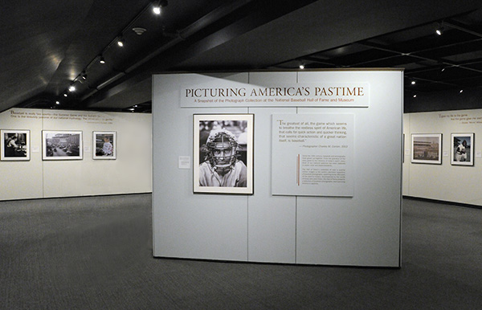
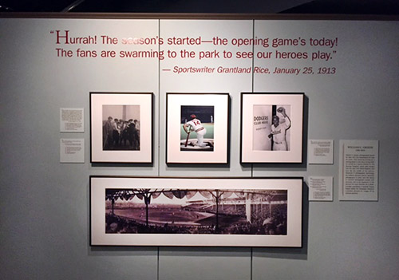

| 

Traveling Exhibition Now Available
2022 - 2026
As baseball became our “National Pastime” in mid-19th century America, a new art— photography—was there to document the sport. From the grandeur of the early game to the vibrancy of today’s big league action, almost every facet of baseball has been captured in sepia, black-and-white and color.
Preserving the historic link between baseball and photography, the National Baseball Hall of Fame and Museum’s collection of approximately 350,000 unique images is the world’s premiere repository of baseball photos, spanning well over 150 years of the sport’s history. The Museum’s Picturing America’s Pastime exhibition features a variety of these timeless pictures, many by distinguished photographers and each accompanied by an enriching and historic quote. Now the exhibit embarks on a national road trip, commemorating and celebrating the inextricably entwined worlds of baseball and photography by picturing America’s pastime. |
While it may be cliché to say that a picture is worth a thousand words, it is also an understatement. They are really worth much more. Images tell stories that go well beyond words. And the honesty and immediacy of a very special type of image — the photograph — makes for a unique relationship between the picture and the history it records.
Baseball and photography grew up together, each becoming more refined and gaining in popularity during the mid-19th century. As the repository of our national pastime’s long history, it is only fitting that the National Baseball Hall of Fame and Museum should tour an exhibit highlighting its expansive photographic archives. |

When preparations for the exhibit began in 2012, the Hall of Fame’s curatorial team faced the daunting task of choosing around 50 photographs from a collection of over 350,000 images. The team embraced the challenge, worked diligently for a number of months, and culled down the vast possibilities to a selection of a few hundred pictures. Further cuts proved grueling, as each photo seemed to beg for inclusion. The difficult process reinforced just how impressive the Hall’s photo archive is and ultimately resulted in a great exhibit, both on the wall and on “the cutting room floor.” |


At the same time that selections were being made, curators also rigorously researched each photograph. Many of the images had never been thoroughly examined, and the work revealed undiscovered and interesting details that made for intriguing stories. Ultimately, our final choices for the exhibit were those photos of exceptional quality that told rich stories and helped show off the breadth and depth of the Hall of Fame’s unparalleled collection.


In 1924, American photographer Alfred Stieglitz wrote to novelist
Sherwood Anderson:
“Yesterday afternoon as I went for the mail, the drugstore was filled with villagers listening to the Radio. Baseball. ... I was wondering, would a crowd of Americans ever stand before a picture of real value with a fraction of the enthusiasm spent on baseball?” |
Perhaps they would, if the pictures were of baseball.
— Tom Shieber, Senior Curator
National Baseball Hall of Fame and Museum |
|
| EXHIBITION FACTS |
CONTENTS
51 framed photo enlargements,
text panels, labels
- LIST OF WORKS WITH IMAGES -
- INSTALLATION GUIDE -
Exhibition Script and Crate Details
Upon Request
SPACE REQUIREMENTS
160 running feet minimum
SECURITY
Moderate
LOAN FEE
Upon Request
SHIPPING & INSURANCE
Exhibitor Responsible
EXHIBITION WEBSITE
www.p-t-e.org/baseballhof
CONTACT
Tour Management by

www.p-t-e.org
310 397 3098 info@p-t-e.org
|
| SCHEDULE |
as of 10/30/23
2022
September 10 - December 31
Fullerton Museum Center
Fullerton, CA
2023
May 18 - October 15
Long Island Museum
Stony Brook, NY
November 7 - January 21, 2024
OPEN
2024
February 17 - June 9
Dubuque Museum of Art
Dubuque, IA
July 1 - September 28
Mulva Cultural Center
De Pere, WI
October 21 - December 31
OPEN
2025
January 1 -August 1
OPEN
August 26 - November 15
Lauren Rogers Museum
Laurel, MS
December 7 - December 31
OPEN
2026
July 1 - June 1
OPEN
June 27 – October 10
Upcountry HIstory Museum
Greenville, SC
November 1 - December 31
OPEN
2027
OPEN
|
| |
c. 2023 PTE, LLC |
 .
.